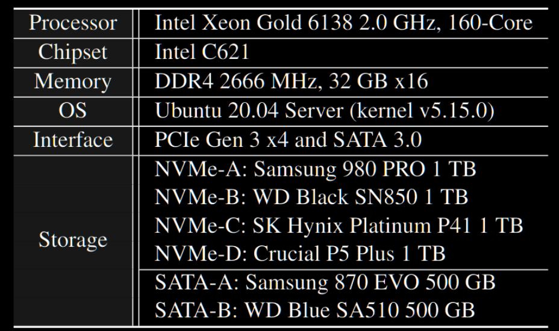
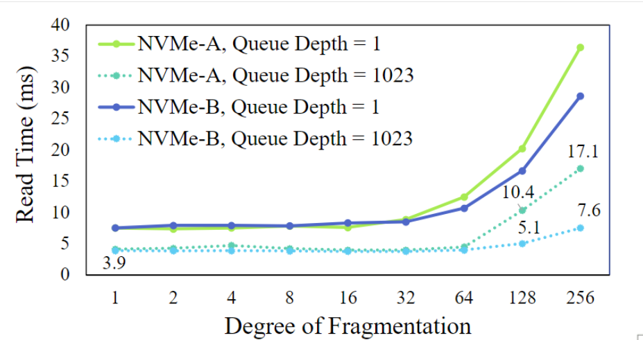
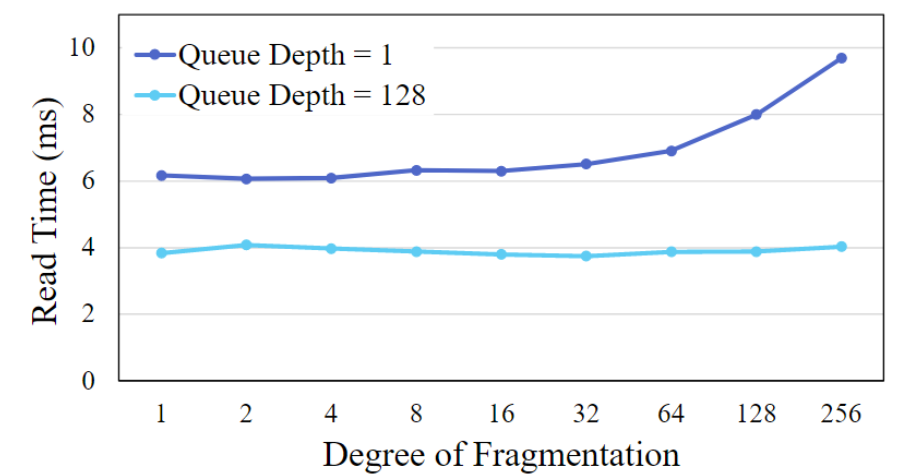
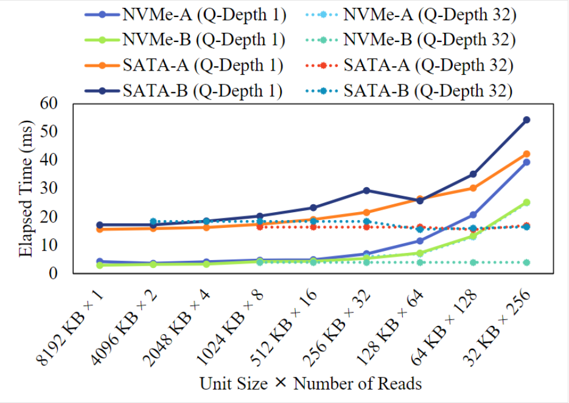
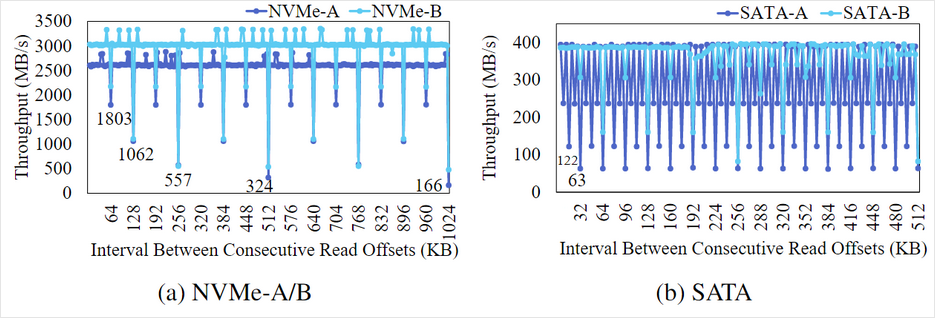
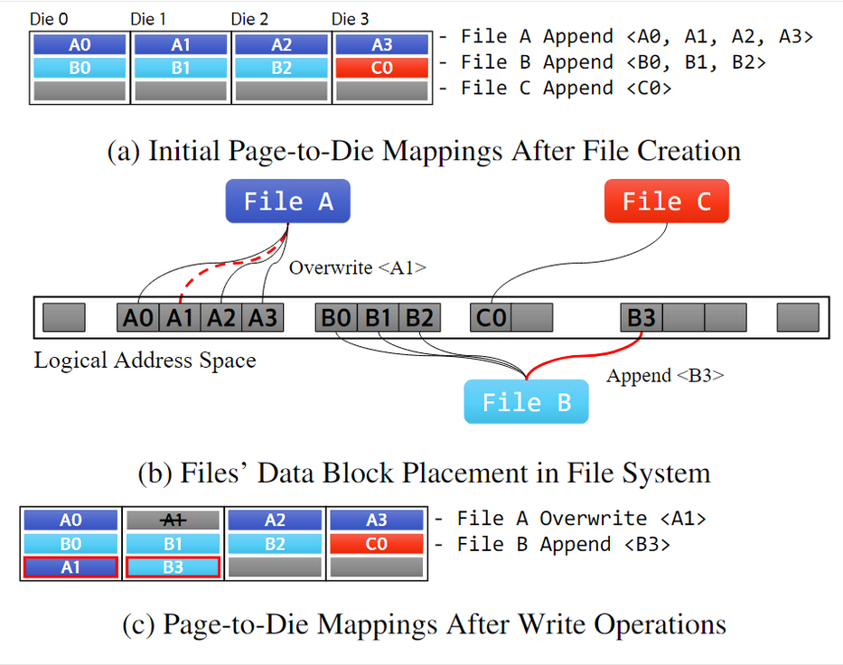
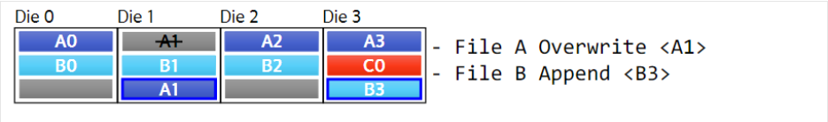

We Ain’t Afraid of No File Fragmentation: Causes and Prevention of Its Performance Impact on Modern Flash SSDs
文件碎片分析实验
实验目的： 探究文件碎片对性能的影响，并分析主机端和设备端对性能的影响程度。
实验平台：

- 文件系统：ext4
- 实验方法：
- 在每次实验运行之前关闭page cache；
- 使用nr_requests参数来调整I/O队列深度，每个实验重复10次；
- 创建不同碎片程度的文件：DoF（ actual number of extents to the ideal number of extents）
- 每个文件的总大小：8MB；
- 具体方法：关闭ext4的延迟分配和块预留优化；写一段target file的内容，然后再写一段其他文件的内容；使target file 碎片之间的偏移保持在8MB。例如，要生成DoF=4的target file，那么该文件的每个碎片大小为8MB / 4 = 2MB；并且要保持每个碎片之间的距离为8MB，因此需要先写2MB的target file，然后再写6MB的其他文件，重复4次即可。
- DoF范围从1到256
- 结果一：证实文件碎片化会影响性能

- 结论：
- 文件碎片化会导致性能下降
- 队列深度小会导致更明显的性能下降
下面需要探究是主机端软件层影响更大还是设备端影响更大
主机端探究
- 实验设置： 主机端不变，设备端使用ramdisk

- 结论： 队列深度为1时会出现性能下降，但当队列深度较大时，几乎没有性能下降。
- 深度为1时性能下降的原因：
- 测量 __x64_sys_read 函数在 DoF 变化时分别创建 iomap、bio 和request结构所需的时间。
- 结论：iomap和request结构的创建时间增加，bio的时间变化不大
- 深度为128时性能下降不大的原因：
- 使用blktrace测量request结构体创建以及ramdisk访问的延迟（DoF=128,队列深度=128）。
- 结论：由于内核中的plug进程，创建request的时间会被ramdisk读取之前request的时间掩盖，所以在队列深度较大时，性能下降并不明显。
- 深度为1时性能下降的原因：
设备端探究
- 研究对象：接口（SATA/NVMe）+设备内部的性能
- 实验方法：
- 从裸盘中读取8MB的连续文件，排除文件系统和内核I/O路径的影响。
- 读取单位从32KB增加到8MB，每次都扩大一倍。
- 每次测试之前都将SSD 全部trim，并且对要读的区域执行顺序写。
- 测试结果：

- 结论：
- 当设备的队列深度设置为1时，随着读取单元的减小，读取性能下降
- 当队列深度较大时，性能变化不明显
总结论
- 文件碎片化对主机端软件开销影响不大，并且由于队列异步，其实际开销还会大大减少。
- 当请求分割出现时，若采用多队列，主机接口+设备内部的开销也不明显。
- 当前系统中默认均为多队列设置，因此实际上请求分割并非导致总体性能下降的主要原因。
文件碎片化导致性能下降的真正原因
问题阐述： 文件碎片化在SSD内部引起芯片级冲突，从而影响读取性能。这种冲突会导致读取操作只能在部分芯片上进行，加重了读取时间。
模拟芯片级冲突：
- 假设一个SSD以4KB页面的循环方式向16个芯片分配存储空间。
- 如果连续写入1MB数据（256页），然后每隔一页读取一次（128页），读取操作只能发生在一半的Die上。
- 这样会导致芯片级冲突加倍，从而使读取128页的时间几乎翻倍。
测试方案及结果：
测试方案：使用FIO进行测试，设置读取粒度为4KB，每次读取间隔与上一次保持固定值(alignment size)。
测试结果：

NVMe-A在对齐粒度为64KB时首次出现性能下降（对应于只用到1/2 Die的情况），表明每次分配32KB的数据到一个Die上。在对齐粒度为1024KB时性能最差，因此可知NVMe-A的stripe size为1MB。
对于NVMe-B，其die分配粒度为32KB，但条带大小为512KB。
超过条带大小后，性能下降与alignment size % stripe size相同，因此会呈现出对称的性能曲线。
结论：
- 文件碎片导致的性能损失主要是由SSD内部的芯片级冲突引起的。
- 与可以通过增加I/O队列深度来隐藏的I/O路径延迟或接口开销不同，芯片级冲突导致的性能下降会持续存在。
解决方案
根据上述分析，可以得出结论：逻辑层的文件碎片化与读取性能下降并非密切相关。实际上，读取性能下降主要源于page-to-die的不合理映射，从而导致die级冲突。换言之，即使文件存在碎片化，若page和die之间的映射得当，性能不会受到太大影响；反之，即使文件未碎片化，若存在不合理的page和die的映射，也会对性能造成影响。
具体而言，考虑盘内的初始情况如下图所示：文件A需要覆盖写A1，文件B需要追加写B3。如果按照循环的方式分配die，将会产生图中(c)所示的分布。这种情况下，读取文件A时，A0和A1会发生die级冲突；读取文件B时，B1和B3也会发生die级冲突。
然而，如果情况稍有改变，比如文件A依次覆盖写A1、A2、A3，然后文件B追加写B3，那么尽管文件B仍然存在碎片化，但B3将位于die3上。这样一来，在读取时就可以充分利用并行度，从而减少性能下降的影响。

问题解决思路： 合理控制page-to-die映射，减少die级冲突，是减少文件碎片化对性能的影响的关键。
提出方案：
- 修改内核以识别文件写操作中的覆盖写和追加写。
- 对于追加写，除写入命令外，主机提供紧邻正在写入的文件块之前的文件块的LBA。
- 对于覆盖写，在NVMe写入命令中添加标志指示该写入是覆盖写。
- 盘内检查写入命令是追加写还是覆盖写。
- 对追加写，将写入数据放置到紧邻当前写入块的之前写入块的下一个Die上。
- 对覆盖写，将数据写入到其旧数据所在的Die上。

- 可能问题及解决：
- 重复小覆盖写可能导致芯片级写入冲突，但这些通常在主机内存中被合并。
- 覆盖写方式可能快速耗尽某些芯片上的空闲页面，造成磨损不均衡。